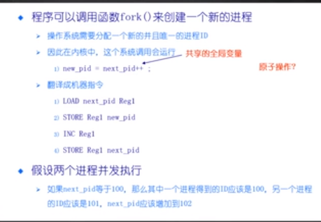

创建时间：
2020/4/6 16:53
更新时间：
2020/4/6 17:19
作者：
lzr
同步
背景知识
到目前为止
多道程序设计：现代操作系统的重要特性
并行很有用
提示：多个并发实体：CPU、IO、用户、、
进程/线程：操作系统抽象出来用于支持多道程序设计
CPU调度：实现多道程序设计的机制
调度算法：不同的策略
接下来：
协同多道程序设计和并发问题
独立的线程：
不和其他线程共享资源或状态
确定性
=>输入状态决定结果
可重现
=>能够重现起始条件
调度顺序不重要
合作线程：
在多个线程中共享状态
不确定性
不可重现
不确定性和不可重现意味着bug可能是间歇性发生的
进程/线程，计算机/设备需要合作
优点1：共享资源
一台电脑，多个用户
一个银行存款余额，多个atm
嵌入式系统（机器人控制，手臂和手的协调）
优点2：加速
IO操作和计算可以重叠
多处理器=>将程序分成多个部分执行
优点3：模块化
将大程序分解成小程序
以编译为例，gcc会调用cpp，cc1，cc2，as
使系统容易扩展
例：

如果并发，则有可能会发生这样的情况：
这样的情况下两个process的pid一样了
无论多个线程的指令序列怎样交替进行，程序都必须正常工作
多线程程序具有不确定性和不可重现的特点
不经过专门设计，
调试难度很高
不确定性要求并行程序的正确性
先思考清楚问题，把程序的行为搞清楚
切忌急于着手编码